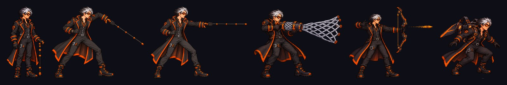
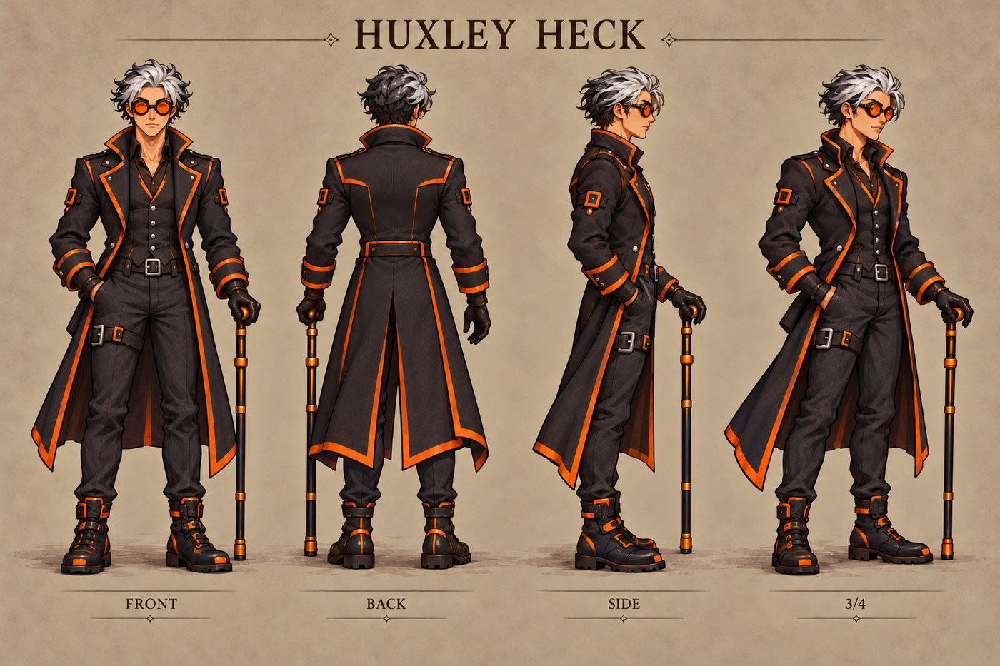
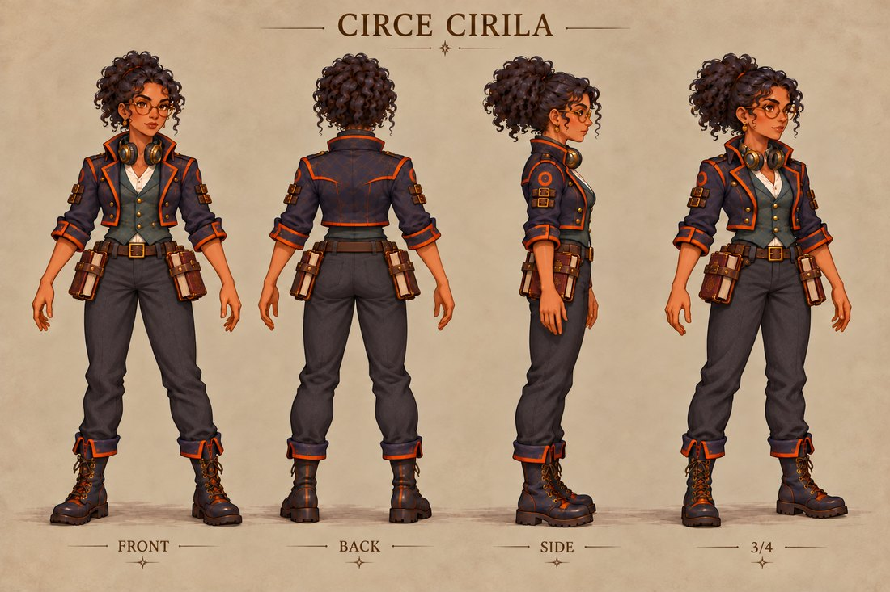
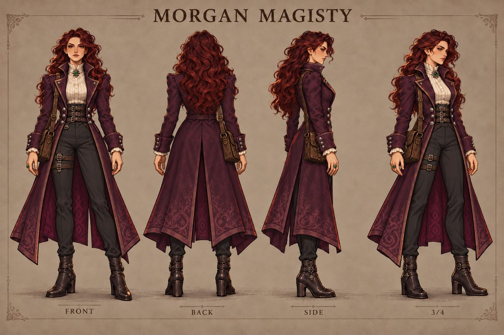
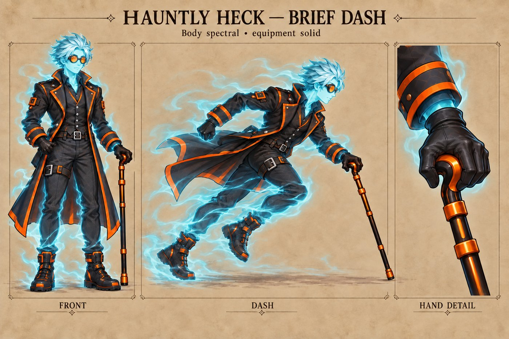
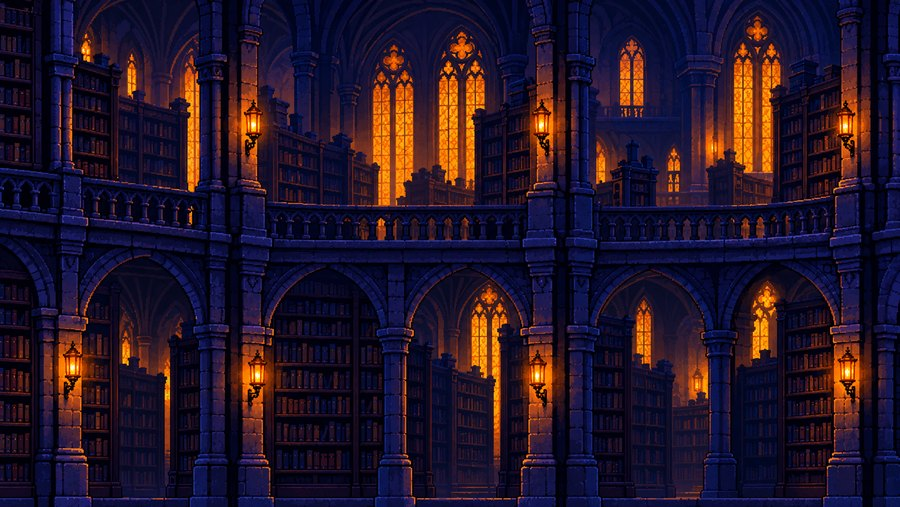
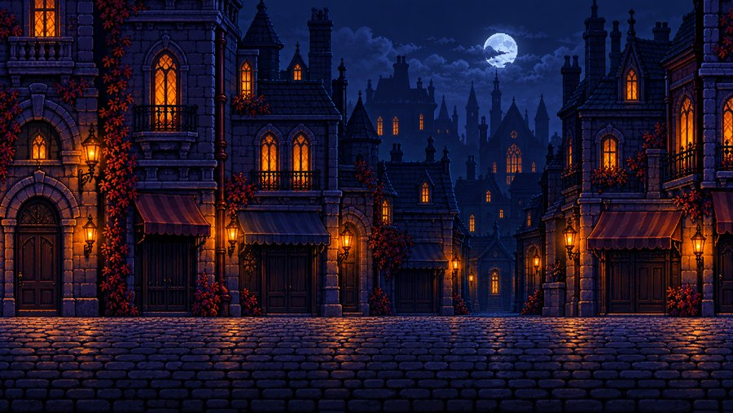
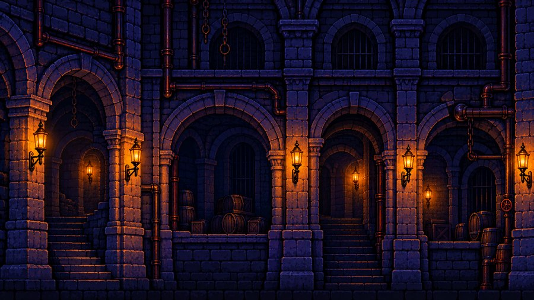
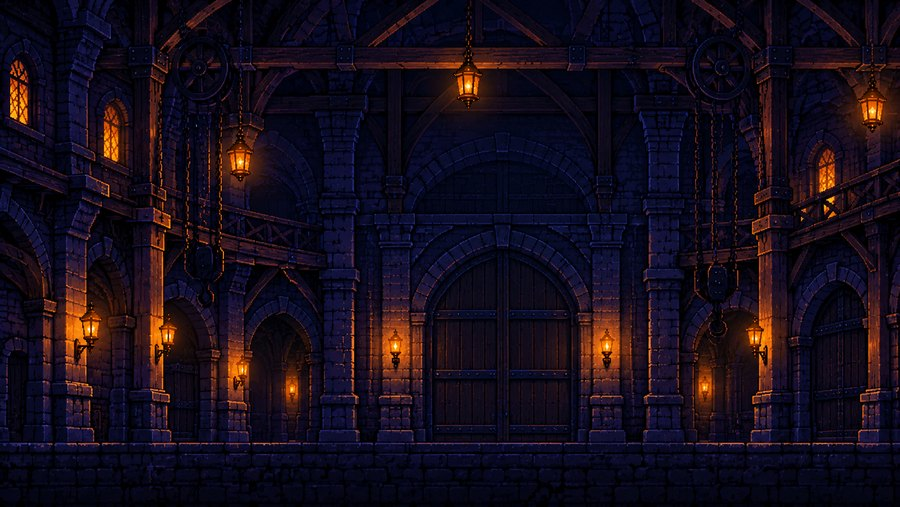
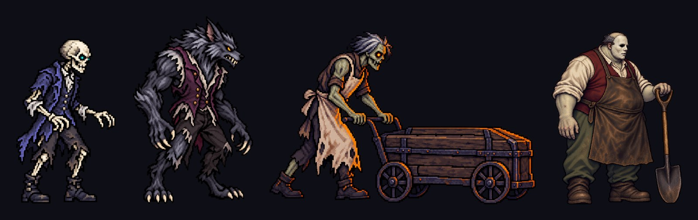

A town taken on Hallow's Eve
Hux Heck is in his first year as a supernatural hunter. A year ago he inherited the Heck family fortune, its secrets, and Heck Tech, the family's technology for fighting the supernatural. Now he has come to a small town in search of a legendary book, The Codex Gigas.
He arrives to find the town seized by a wicked Priest and his monsters. When he meets parents whose daughter has been taken, Hux promises to bring her home. With his assistant Circe flying support overhead in the Heckopter, he pushes from the haunted streets into a nightmare of carnivals, graveyards, catacombs and cathedral halls.
Every fight is also a puzzle
Hauntly Heck
An eight-direction dash during which Hux turns briefly spectral, slipping through attacks, enemies and ghostly barriers to open new routes.
Hauntly Hijack
Hux's spirit leaves his body and possesses a monster, using its abilities to fight, travel and solve puzzles. His empty body stays behind, and the other monsters go after it.
The Heck Cane
A family heirloom and Hux's signature weapon: a five-strike combo and a grapple, with fast, readable combat in the spirit of modern action-platformers.
- Heck Mesh
- A trap that holds ordinary enemies.
- Heck Bow
- Limited shots for distance.
- Heck Gloves
- Close-combat gauntlets.
- Heck Wings
- A double-jump hover, steered for up to 15 seconds.
- Heck Goggles
- Reveal secrets and which monsters can be possessed.
- No skill trees
- Progress comes from skill and story, never grinding.

The hunter and his allies

Huxley "Hux" Heck

Circe Cirila

Morgan Magisty

Large maps, doors worth opening
Each level is a large main map with interiors to enter and explore. In Act 1 that means a Library investigation built on catalog, shelf and registry puzzles, a curiosity shop, a multi-storey boarded house, and the Undertaker's cellar and its boss fight.





- ACT 1Haunted Streets
- ACT 2Abandoned Carnival
- LATERGraveyard
- LATERCatacombs
- FINALECathedral
About the project
- Title
- Hallow Heck
- Developer
- Gameone Games (Waverly Hampton III)
- Team
- 1 developer, all roles
- Status
- In development
- Genre
- Narrative 2D action-platformer
- Players
- Single player
- Platforms
- Nintendo Switch, PlayStation 5, Xbox Series X|S, Steam (PC and Steam Deck), Android, and iPhone, iPad, Mac and Apple TV
- Release order
- Apple platforms first, followed by consoles and PC
- Engine
- Unreal Engine 5 (consoles, PC and Android); native Swift (Apple platforms)
- Expected rating
- Teen (mild violence)
waverlyhampton3@icloud.com